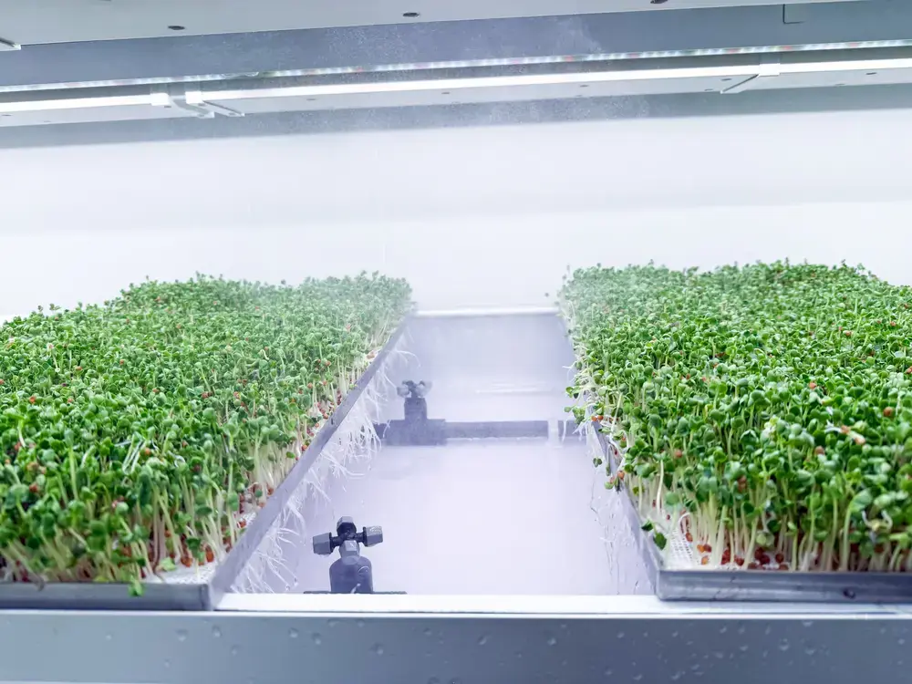

Stainless-steel growing trays
The 225-tray reference relates to a selected mesh-tray configuration, with germination paper above the aeroponic root-zone delivery. It is not a guarantee of 225 saleable trays every cycle.
A microgreens container farm should follow the crop cycle and the customer's buying format. GROWSPEC configures 40ft BioCube Container systems around tray spacing, aeroponic irrigation, cleaning access, climate control and a repeatable harvesting routine.
The reference microgreens configuration uses 225 stainless-steel mesh growing trays in a 40ft container. Germination paper is placed on the mesh trays and nutrients are delivered through an aeroponic irrigation system. Tray type, root-zone design, usable growing area and planting rhythm are confirmed in the final engineering layout.
Microgreens customers may instead require retail punnets or live trays. Punnet counts and stainless-steel tray counts are not interchangeable. For a meaningful investment forecast, specify what customers buy: kilograms, cut-and-packed punnets, or live trays. Then calculate sowing batches, growing days, harvest loss and packing labor.

The 225-tray reference relates to a selected mesh-tray configuration, with germination paper above the aeroponic root-zone delivery. It is not a guarantee of 225 saleable trays every cycle.
Airflow, temperature, humidity and light programme must be matched to the microgreen species and germination/finishing stages.
Plan crop batches around variety, growth time, harvest day and customer demand. Sanitation, maintenance and re-sowing capacity influence actual throughput.
A crop forecast becomes useful only when it distinguishes seed input, planted area, harvested product, post-harvest handling and repeat orders. The workflow should include these three stages.
Select varieties, confirm seed supplier, prepare germination paper, sanitize trays, record the batch and arrange the initial growth stage.
Operate the nutrient and lighting systems for the selected microgreen varieties; inspect root-zone health and canopy development.
Schedule cutting or live-tray dispatch, record saleable weight, and account for sorting, packing, chilled delivery and crop waste.
Determine weekly demand in kilograms, punnets or trays.
Select varieties, germination method and realistic cycle times.
Confirm electrical supply, water, drainage, climate and operator access.
Use marketable output with seed, labor, packaging and delivery costs.
A commercial quote should distinguish grow-tray format, growing area, environment controls, irrigation, automation, connected load, local installation and operator responsibilities. Published configuration figures are reference designs rather than guaranteed sales volume.
Review project economics in our container farm cost and ROI guide ↗.
Equipment layouts and output assumptions are subject to project-specific technical verification.
A selected GROWSPEC 40ft microgreens reference layout uses 225 stainless-steel mesh trays with germination paper and aeroponic nutrient delivery. Final tray spacing and usable growing area require layout approval.
No. These are different production and sales formats. Tray layout, punnet layout and packed-product yields must be calculated separately.
GROWSPEC offers a microgreens configuration with aeroponic root-zone irrigation, integrated with lighting, climate and nutrient management.
A realistic monthly figure requires varieties, sowing density, crop duration, harvest weight per tray, usable crop percentage and the chosen packaging method. There is no universal yield guarantee.
Provide the destination country, crop varieties, intended selling format, planned weekly orders, installation conditions and procurement timeline.
Inspect the integrated 40ft platform and available specifications.
Plan crop cycles and harvest economics.
Compare a smaller system for on-site hospitality use.
Share your crop, location, production objective and utility requirements. We will review the suitable configuration and scope for quotation.
Email abbas@growspecbio.com if you have a technical brief or drawings. No fixed harvest, profitability or certification applies to every project configuration.